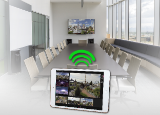
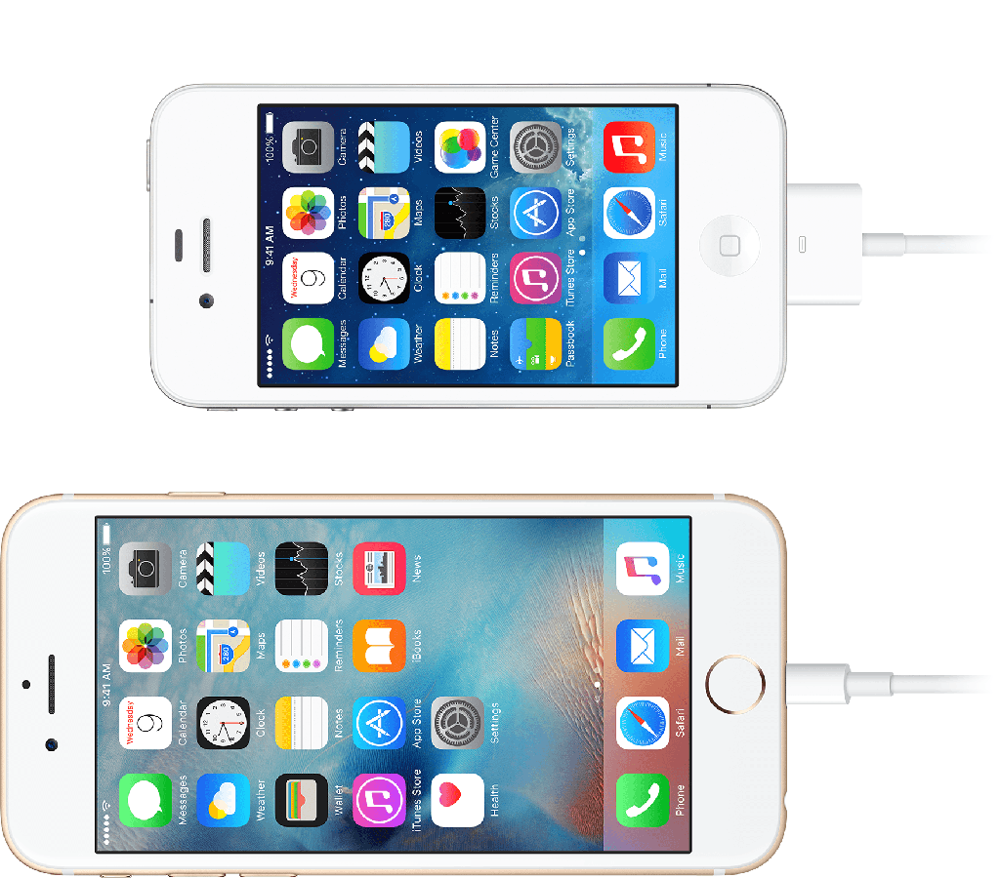
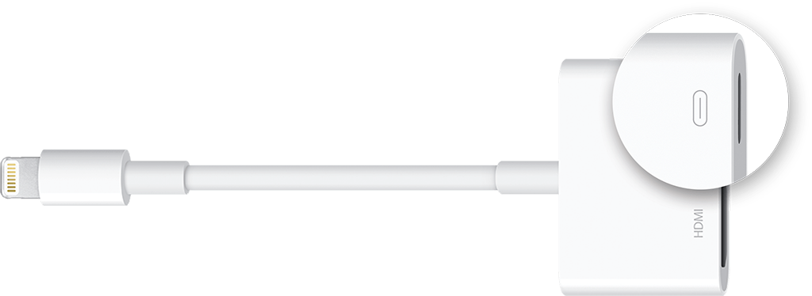

Quick start: Presentation¶
Mirroring¶

To mirror content from your control device to a big screen (a secondary display), follow the steps below.
iOS¶
-
Plug your Digital AV or VGA adapter into the charging port at the bottom of your iOS device. 
-
Connect an HDMI or VGA cable to your adapter. Notice that the adapter has also a charging port; you can charge your iPad during mirroring. 
-
Connect the other end of your HDMI or VGA cable to your secondary display (TV, monitor, or projector).
-
Turn on your secondary display.
-
If necessary, switch to the correct video source on your secondary display. If you need help, use your display's manual.
Now the screen on your iPad should appear on your TV, display, or projector.
Tip
It is also possible to connect wirelessly using AirPlay if you connect an Apple TV to your secondary display.
Modes¶
LiveSYNC provides two screen mirroring modes:
-
Presentation: shows only the Presentation area on the secondary display
-
Mirroring: show the complete app on the secondary display
Typically, Presentation mode is the correct one. However, if you want to show how you use the app (training) or for example share the Mosaic screen, then switch to Mirroring mode.
There is also a third option Show touches. This visualizes touches on your control device's screen, so that audience watching the secondary display can better understand your actions.
What's next¶
You have barely scratched the surface of what you can do with the LiveSYNC tool. Learn more by reading some of the tutorials or dive into the User Guide.